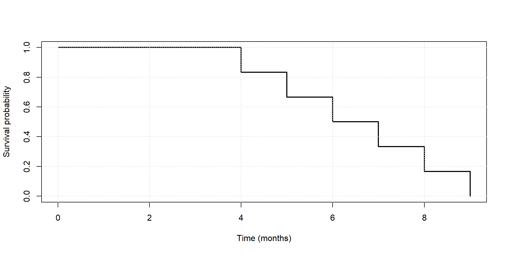
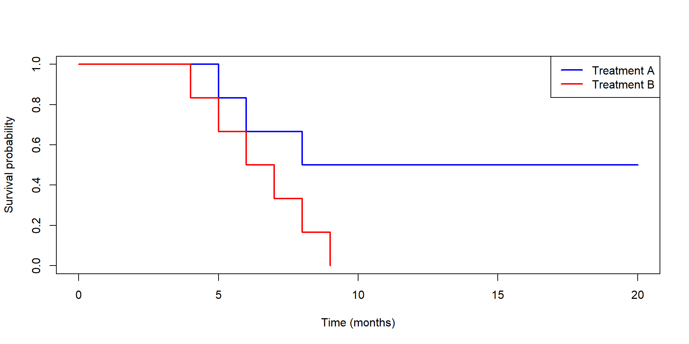

Advanced Topic - Survival Analysis
Zhaoxia Yu
Load packages, read data
Motivating Example and Kaplan–Meier Curves
A Motivating Example
Researchers are comparing two new cancer treatments.
The outcome of interest is survival time, measured in months after treatment begins.
At the end of the study, they record what happened to each patient.
Some patients died during the study, while others were still alive when the study ended.
Question: Which treatment appears to help patients survive longer?
Survival Data from the Study
| A: Time | A: Outcome | B: Time | B: Outcome |
|---|---|---|---|
| 5 | Died | 4 | Died |
| 6 | Died | 5 | Died |
| 8 | Died | 6 | Died |
| 20 | alive when study ended | 7 | Died |
| 20 | alive when study ended | 8 | Died |
| 20 | alive when study ended | 9 | Died |
Question: How to Compare the Two Treatments?
Life Table for Treatment B
All patients eventually died, so we know each patient’s survival time exactly.
| Time (months) | Patients Alive | Survival Probability |
|---|---|---|
| 0 | 6 | 1.00 |
| 4 | 5 | 5/6 = 0.833 |
| 5 | 4 | 4/6 = 0.667 |
| 6 | 3 | 3/6 = 0.500 |
| 7 | 2 | 2/6 = 0.333 |
| 8 | 1 | 1/6 = 0.167 |
| 9 | 0 | 0.000 |
Life Table for Treatment B
The life table summarizes how many patients are still alive over time.
The survival probability is simply
\[\frac{\text{Patients Alive}}{\text{Total Patients}}.\]
We can visualize these probabilities using a Kaplan–Meier (KM) curve.
Kaplan–Meier Curve for Treatment B

- The KM curve visualizes survival probability over time.
- Every death causes a vertical drop.
- Between deaths, the survival probability stays the same.
How to Build a Life Table for Treatment A?
| Time (months) | Patients Alive | Survival Probability |
|---|---|---|
| 0 | 6 | 1.000 |
| 5 | 5 | 5/6 = 0.833 |
| 6 | 4 | 4/6 = 0.667 |
| 8 | 3 | 3/6 = 0.500 |
| 20+ | ? | ? |
How to Build a Life Table for Treatment A?
The first three rows are easy because we know exactly when three patients died.
But what happens after 20 months?
We know the remaining three patients were still alive when the study ended, but we do not know their actual survival times.
Question: How should we continue the life table?
Kaplan-Meier Curve for Treatment A
| Time | Patients Alive | Survival |
|---|---|---|
| 0 | 6 | 1.000 |
| 5 | 5 | 0.833 |
| 6 | 4 | 0.667 |
| 8 | 3 | 0.500 |
| 20+ | ? | ? |
The curve stays flat after month 6 because
The small marks on the curve indicate patients who were still alive when the study ended.
Right-Censored Data
| Patient | Last observed time | What do we know? |
|---|---|---|
| A | 5 | Died at month 5 |
| B | 8 | Died at month 8 |
| C | 20 | Still alive when the study ended |
For Patient C,
- we know the survival time is at least 20 months,
- but we do not know the exact survival time.
This is called a right-censored observation.
Survival Data
Code
# A tibble: 12 × 3
treatment time status
<chr> <dbl> <dbl>
1 A 5 1
2 A 6 1
3 A 8 1
4 A 20 0
5 A 20 0
6 A 20 0
7 B 4 1
8 B 5 1
9 B 6 1
10 B 7 1
11 B 8 1
12 B 9 1- treatment: Treatment A or B
- time: Survival time (months)
- status:
- 1 = Patient died during the study
- 0 = Patient was still alive when the study ended
Kaplan–Meier Curves

- The two curves summarize the survival experience of the two treatments.
- Higher curves indicate better survival.
Comparing the Two Treatments
The output in the next slide includes
- the number of patients at risk before each event,
- the number of events (deaths),
- the estimated survival probability, and
- the standard error of the estimate.
These are the same quantities we used to construct the life table.
Call: survfit(formula = Surv(time, status) ~ treatment, data = survival_data)
treatment=A
time n.risk n.event survival std.err lower 95% CI upper 95% CI
5 6 1 0.833 0.152 0.583 1
6 5 1 0.667 0.192 0.379 1
8 4 1 0.500 0.204 0.225 1
treatment=B
time n.risk n.event survival std.err lower 95% CI upper 95% CI
4 6 1 0.833 0.152 0.5827 1.000
5 5 1 0.667 0.192 0.3786 1.000
6 4 1 0.500 0.204 0.2246 1.000
7 3 1 0.333 0.192 0.1075 1.000
8 2 1 0.167 0.152 0.0278 0.997
9 1 1 0.000 NaN NA NAAre the Two Survival Curves Different?
The log-rank test compares the two Kaplan–Meier curves.
- Null hypothesis: The two treatments have the same survival experience.
- A chi-square test statistic is computed to test the null hypothesis. The test statistic compares:
- the observed number of deaths in each treatment group, and
- the expected number of deaths in each treatment group if the null hypothesis were true.
Limitations of Kaplan–Meier Curves
Kaplan–Meier curves are useful for comparing survival between groups.
- We often need to adjust for other important factors, such as
- age,
- sex,
- disease stage, or
- blood pressure.
Cox Proportional Hazards (PH) Regression
Example
Suppose patients receiving Treatment A are much younger than those receiving Treatment B.
- Is better survival due to the treatment?
- Or simply because younger patients tend to live longer?
We need a regression model that can account for multiple variables at the same time.
A Natural Extension: Cox Proportional Hazards Regression
Just as
- linear regression models a continuous outcome, and
- logistic regression models a binary outcome,
Cox proportional hazards regression models time until an event occurs.
Advantages:
- Includes multiple predictors in one model.
- Adjusts for confounding variables.
- Properly handles patients who are still alive when the study ends.
- Estimates the effect of each predictor on survival.
Example: Cox Proportional Hazards Regression
The lung dataset contains survival information for patients with advanced lung cancer.
time: Survival time (days)status: Whether the patient died during the studyage: Age (years)sex: 1 = Male, 2 = Female
Call:
coxph(formula = Surv(time, status == 2) ~ age + sex, data = lung)
n= 228, number of events= 165
coef exp(coef) se(coef) z Pr(>|z|)
age 0.017045 1.017191 0.009223 1.848 0.06459 .
sex -0.513219 0.598566 0.167458 -3.065 0.00218 **
---
Signif. codes: 0 '***' 0.001 '**' 0.01 '*' 0.05 '.' 0.1 ' ' 1
exp(coef) exp(-coef) lower .95 upper .95
age 1.0172 0.9831 0.9990 1.0357
sex 0.5986 1.6707 0.4311 0.8311
Concordance= 0.603 (se = 0.025 )
Likelihood ratio test= 14.12 on 2 df, p=9e-04
Wald test = 13.47 on 2 df, p=0.001
Score (logrank) test = 13.72 on 2 df, p=0.001Interpreting the Results
| Predictor | Hazard Ratio | Interpretation |
|---|---|---|
| Age | 1.02 | Each additional year of age increases the risk of death by about 2%. |
| Female (vs. Male) | about 0.60 | Females have about 40% lower risk of death than males. |
Summary
Linear regression estimates changes in the mean.
Logistic regression estimates odds ratios.
Cox regression estimates hazard ratios.
Advanced
Survival Analysis in Modern Data Science
In many biomedical studies, researchers collect thousands of variables. For example,
- gene expression levels,
- genetic variants,
- proteins,
- medical images, and
- clinical measurements.
A Challenge - Overfitting
When there are many variables, fitting a complex model may overfit the data.
- The model fits the training data very well,
- but performs poorly on new patients.
This challenge is not unique to survival analysis.
Overfitting occurs in
- linear regression,
- logistic regression,
- Cox regression,
- and many machine learning methods.
Modern Survival Analysis
Researchers use more advanced methods to improve prediction and identify important variables.
| Method | Purpose |
|---|---|
| LASSO Cox regression | Select important variables and reduce overfitting |
| Elastic Net Cox regression | Select groups of correlated variables |
| Random Survival Forests | Capture complex, nonlinear relationships |
| Deep Learning | Analyze large and complex biomedical data |
Popular R packages include
- survival — Kaplan–Meier and Cox regression
- glmnet — LASSO and Elastic Net Cox regression
- randomForestSRC — Random Survival Forests